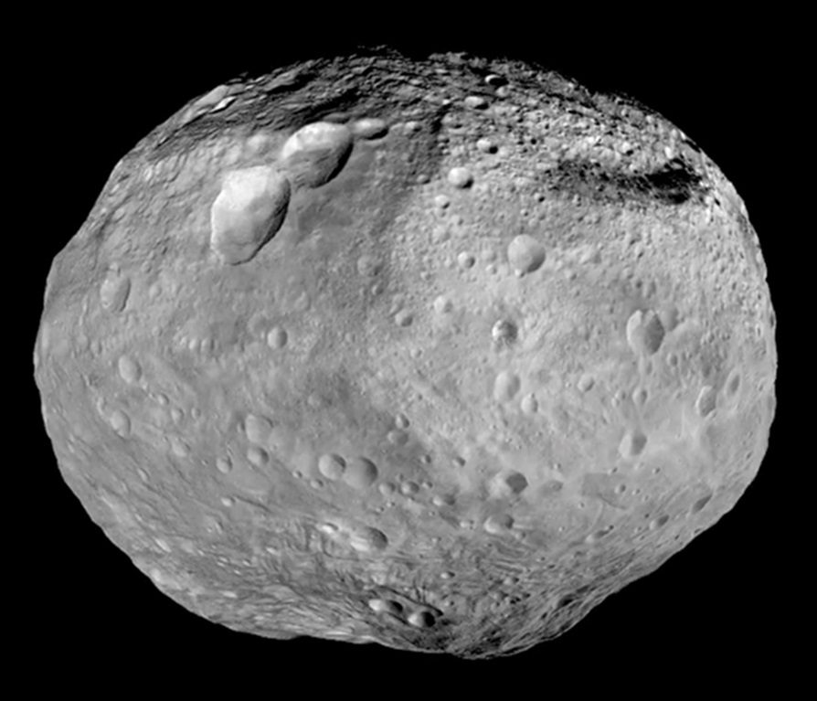

Asteroides, cometas y meteoritos
Las piezas sobrantes del sistema solar: rocas, bolas de hielo sucio y las estrellas fugaces que caen cada noche.


Además del Sol, los planetas y sus lunas, el sistema solar está lleno de cuerpos pequeños: restos de los ladrillos con los que se construyeron los planetas. Estudiarlos es como abrir una cápsula del tiempo de hace 4.600 millones de años.
Asteroides
Los asteroides son cuerpos rocosos o metálicos, desde pocos metros hasta cientos de kilómetros. Se han catalogado más de 1,4 millones. La mayoría se concentra en el cinturón de asteroides, entre Marte y Júpiter, donde la gravedad del gigante impidió que llegaran a formar un planeta. Aun así, están muy separados: si viajaras por el cinturón, probablemente no verías ninguno a simple vista.
El mayor es Ceres, considerado planeta enano. Le siguen Vesta, con una montaña de 22 km en su polo sur, y Palas. Algunos asteroides tienen sus propias lunas, como Ida, que tiene a la pequeña Dáctilo.


Muestras traídas a la Tierra
Japón trajo polvo del asteroide Itokawa (2010) y de Ryugu (2020) con sus sondas Hayabusa. La NASA trajo en 2023 unos 120 gramos del asteroide Bennu con la sonda OSIRIS-REx. En ellos se han encontrado aminoácidos y sales formadas en agua: algunos ingredientes de la vida pudieron llegar a la Tierra a bordo de asteroides.
Cometas
Los cometas son bolas de hielo sucio, polvo y roca de pocos kilómetros. Vienen de las regiones más lejanas del sistema solar, el cinturón de Kuiper y la nube de Oort. Cuando uno se acerca al Sol, el hielo se convierte en gas y forma una coma brillante y dos colas que pueden medir millones de kilómetros: una de polvo, curvada, y otra de gas, siempre apuntando en sentido contrario al Sol.
- El cometa Halley vuelve cada 76 años. Su última visita fue en 1986 y la próxima será en 2061.
- El Hale-Bopp fue visible a simple vista durante 18 meses en 1996 y 1997.
- En 2014 la sonda europea Rosetta se puso en órbita alrededor del cometa 67P y dejó caer sobre él el módulo Philae, el primer aterrizaje en un cometa.


Meteoros y meteoritos
Cuando un pequeño fragmento de roca entra en la atmósfera a decenas de kilómetros por segundo, se calienta y deja una estela luminosa: un meteoro o estrella fugaz. Si algún trozo sobrevive y llega al suelo se llama meteorito. Las lluvias de estrellas, como las Perseidas de agosto, ocurren cuando la Tierra cruza la estela de polvo que dejó un cometa.
Cuando caen del cielo
- Hace 66 millones de años, un asteroide de unos 10 km cayó en la península de Yucatán (México), formó el cráter de Chicxulub y provocó la extinción de los dinosaurios no avianos.
- En 1908, la explosión de un objeto sobre Tunguska (Siberia) arrasó 2.000 km² de bosque.
- En 2013, un meteoro de 20 metros estalló sobre Cheliábinsk (Rusia); la onda expansiva rompió miles de ventanas.
Defensa planetaria
En septiembre de 2022, la misión DART de la NASA chocó a propósito contra el pequeño asteroide Dimorphos y logró cambiar su órbita: fue la primera vez que la humanidad desvió un cuerpo celeste. La misión europea Hera llega en 2026 para estudiar el resultado. El asteroide Apophis, de 340 metros, pasará el 13 de abril de 2029 a solo 32.000 km de la Tierra, más cerca que algunos satélites, sin peligro de choque.